| 日付 | 2010年12月4日（土） - 2010年12月7日（火） | ||||
|---|---|---|---|---|---|
| 山域 | 九州の山 | ||||
| メンバー | 家族（妻） | ||||
| 山行形態 | 3泊4日ホテル泊 | ||||
| アクセス | 電車、飛行機、車 | ||||
| ルート (Map1) |
|
2日目
本日は薩摩半島の最南端まで南下し、指宿を目指す。
桜島が遠ざかっていき、植物は南国っぽくなる。
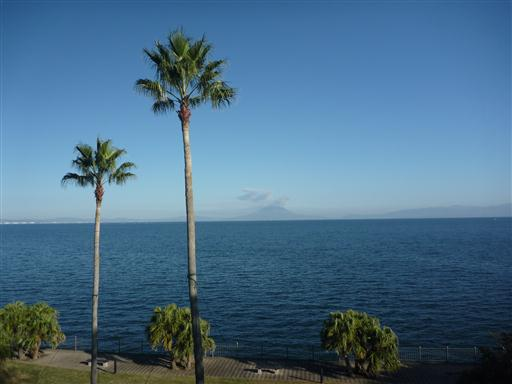
開聞岳の近くにある枚聞神社に立ち寄る。
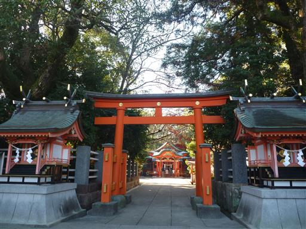
枚聞神社から望む開聞岳。見事な円錐の山だ。
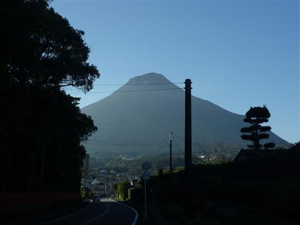
明日か明後日に開聞岳に登る予定だったが、
天気予報がいまいちだったので、今日登ることにする。
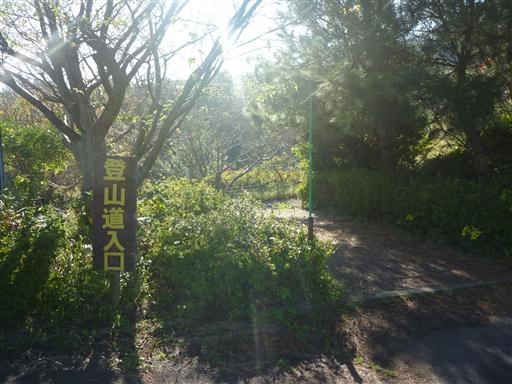
登山道は地面がえぐれていて少々歩きにくい。
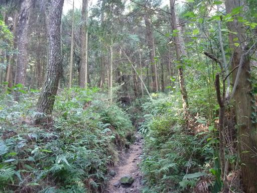
道中にあった案内板。開聞岳は登山道のつけ方が独特だ。
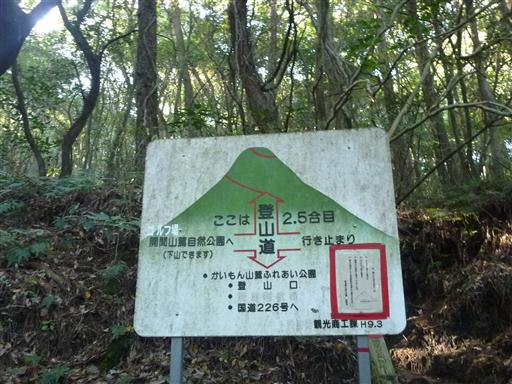
木に小さな丸い葉が点々とついている。関東の山とは見られる植物が少々違う。
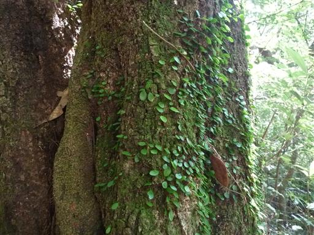
最初は土に覆われていた登山道だが、中腹から先は大きな石が転がっている。
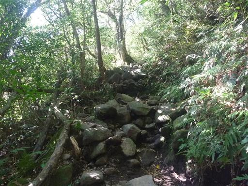
途中で大きく展望が広がる。
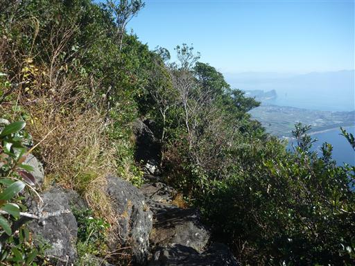
眼下には真っ青な海が広がっている。
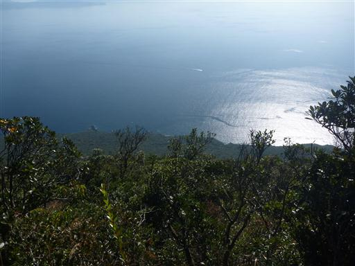
海の向こうに見えているのは大隅半島だ。
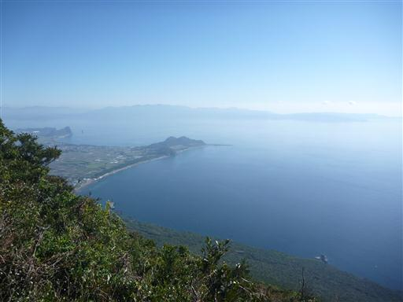
仙人洞という、かつて山伏が修業したといわれる穴が開いている。
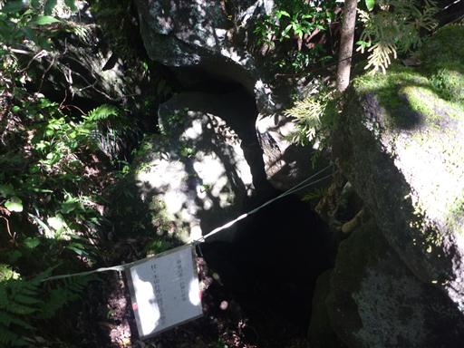
山頂直下。山頂まで52mという、さして必要性も感じられない標識が立てられている。
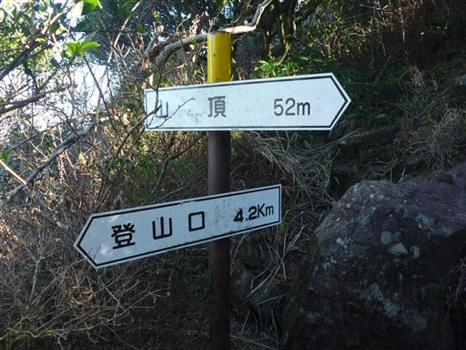
開聞岳山頂到着。標高924m。
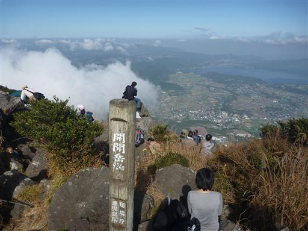
尖った山頂かと思いきや山頂部は案外広く、真中には火口らしきものがある。
全体が樹林でおおわれているため、登山者が行けるのは山頂標識周辺のみだ。
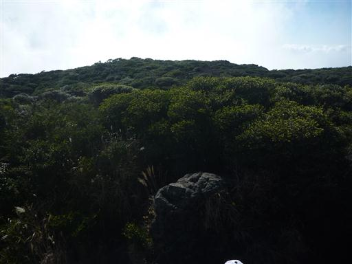
山頂は大混雑ではないがそこそこ賑わっている。
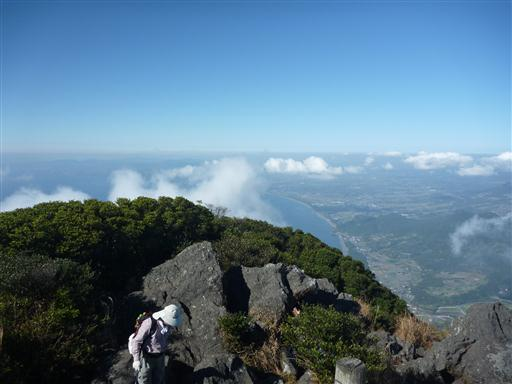
眼下に見える池田湖。九州最大の湖だ。
イッシーという謎の生物がすむという噂がある。あくまでも噂だが…
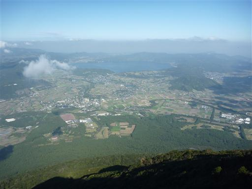
標高は高くないが、海が近いからか次々と雲がやってくる。
山頂のすぐそばを大きな雲がすり抜けていく。
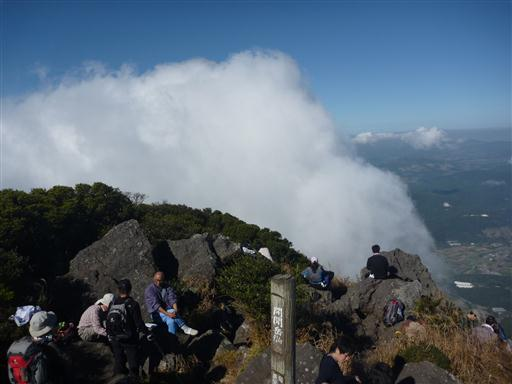
山頂直下には御嶽神社が祀られている。
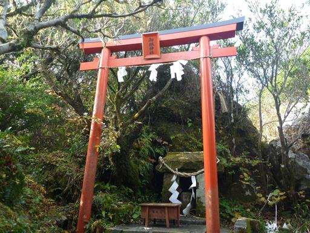
登山道が一本しかないため、来た道を下山する。
まだ時間が早いので、指宿の観光地「長崎鼻」に行ってみる。
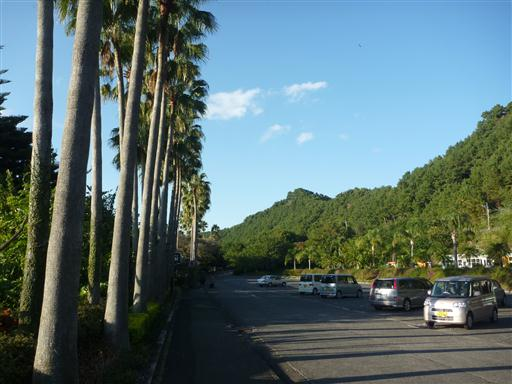
ここには長崎鼻パーキングガーデンという動物公園がある。
入口にはカラフルなインコがとまっている。
動物公園には用がないので、車を停めさせてもらって岬に向かう。
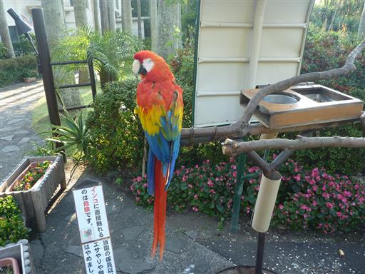
土産物屋が軒を連ねる小道を歩いていくと竜宮神社に到着する。
浦島太郎伝説が残る少し風変わりで小さな神社だ。
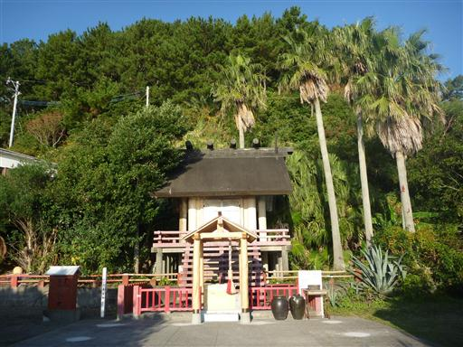
岬に建つ灯台。周り一面海だ。
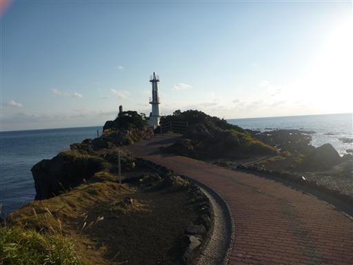
ここから望む開聞岳は見事な円錐。
海に突き出したこの三角形の山はよく目立つ。
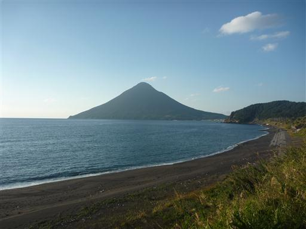
灯台から岩礁に降りて先っぽまで歩く。
遠くに薄らと屋久島が見えている。
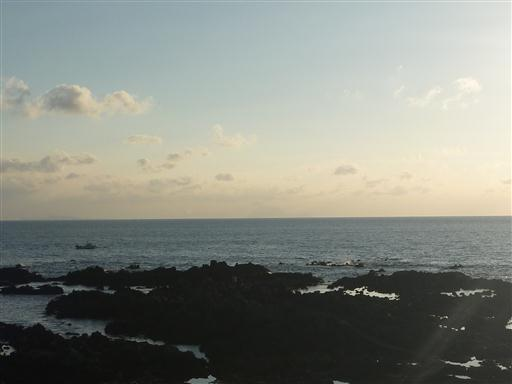
宿に向かう道中、立派な岩を見かける。
近づいてみたが、特に観光地ではなかった。
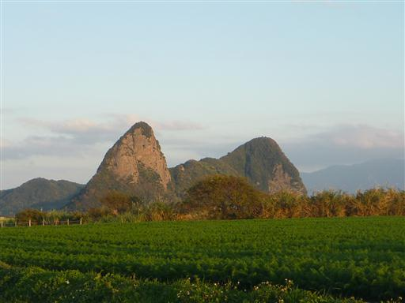
本日の宿泊地、月見荘に到着。
全7室しかないこじんまりとした旅館だ。
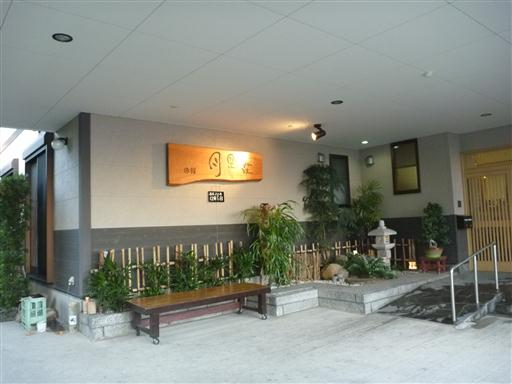
最近リニューアルしたそうで部屋はきれい。
部屋の窓からは海が見える良いロケーションだ。
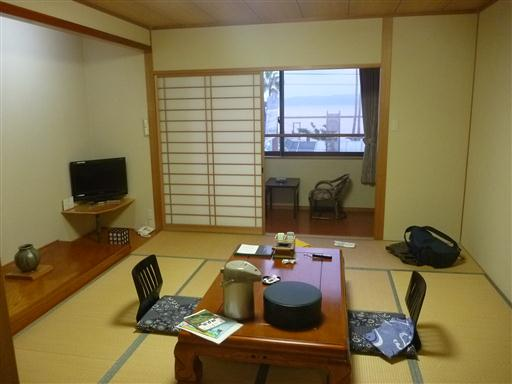